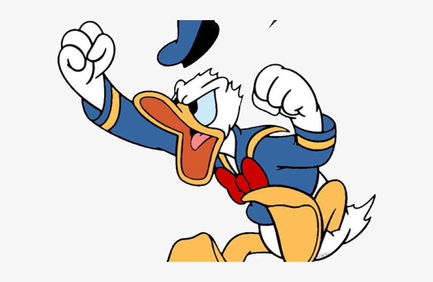
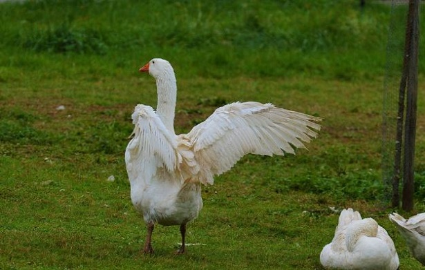

Spesso si crea confusione quando si parla di papere, confondendole con oche o anatre. Al classico dubbio amletico "Ma Paperino è un'anatra o è un'oca?" cercheremo di dare una risposta.
Le anatre appartengono all'ordine degli anseriformi, alla famiglia degli anatidi, a varie sottofamiglie:
All'interno di queste sottofamiglie ci sono poi varie tribù, ma di quelle parleremo un'altra volta. Le oche appartengono sempre all'ordine degli anseriformi, alla famiglia degli anatidi, ma la sottofamiglia è quella delle Anserinae -il nome trae origine dal lungo collo-. Questa sottofamiglia è composta da cinque generi di uccelli di cui parleremo un'altra volta, vi anticipo solo che ne fanno parte Oche e Cigni. Quindi finora abbiamo capito che oche e anatre sono entrambe anatidi, e che le anatre appartengono a più sottofamiglie, mentre le oche appartengono tutte ad una unica sottofamiglia.
E dove mettiamo le papere? Le mettiamo nelle ANSERINE. Papero è infatti il termine con cui si indica l'oca maschio giovane, prima della maturità sessuale; papera è l'oca femmina giovane che ancora non ha raggiunto la maturità sessuale.
Tornando poi alla domanda se Paperino sia un'anatra o un'oca: Paperino è un'anatra, lo dice chiaramente il suo nome inglese: Donald Duck (duck=anatra) E lo dimostra anche la ... cortezza del suo collo. La traduzione italiana in Paperino trae in inganno, è vero, ma è comunque foneticamente bellissima. Quindi la famiglia dei paperi non è esattamente composta da paperi.
Da sempre le oche sono uccelli di medio e grandi dimensione che hanno il loro habitat naturale lungo i corsi fluviali e nelle zone lacustri. La maggior parte delle specie selvatiche del Vecchio Continente e del Nord America sono grandi migratrici, che, in autunno, migrano per “svernare” al sud. Dai primordi della civiltà umana, le oche sono sempre state addomesticate per secoli dai popoli: oltre le oche da cortile si annoverano quelle selvatiche che vivono spesso insieme ai cigni.
Le vere oche sono uccelli di varie dimensioni, sempre associati (ad eccezione della oca delle Hawaii) a un'esistenza legata in maniera maggiore o minore all'acqua. La maggior parte delle specie selvatiche di Europa, Asia e Nordamerica sono grandi uccelli migratori, nidificano nell'estremo nord e svernano molto più a sud. Comunque, gli esemplari fuggiti e le introduzioni hanno portato alcune specie alla nascita di popolazioni residenti rinselvatichite. Le oche sono state addomesticate per secoli. In Occidente, le oche da cortile discendono da quella selvatica, ma in Asia è stata allevata più o meno a lungo l'oca cigno. Tutte le oche hanno una dieta per lo più vegetariana e possono diventare nocive quando gli stormi si nutrono sui terreni coltivati, negli stagni abitati o nelle aree erbose in ambienti urbani. Catturano anche invertebrati se ne hanno l'opportunità; le oche domestiche assaggiano qualunque nuovo genere di cibo commestibile venga loro offerto. Le oche solitamente si accoppiano con lo stesso partner per tutta la vita, ma un piccolo numero di esse può "divorziare" e cercarsi un nuovo compagno. Tendono a deporre un numero di uova più basso delle anatre, ma entrambi i genitori proteggono il nido e i piccoli, che solitamente hanno un tasso di sopravvivenza più alto rispetto a quelli allevati da un solo genitore.
Il nome anglofono dell’oca, Goose, derivava da una delle più ataviche parole delle lingue indoeuropee. Il significato moderno deve la sua dalla radice etimologica dal termine indoeuropeo ghans, dal sanscrito hamsa, dalla lingua latina anser e dal termine greco greco khén. Come si può ben intuire con l’evoluzione dei suoni e delle caratteristiche terminologiche della scrittura e delle lettere, questa radice si trasformò rispetto alle lingue anglosassoni arcaiche gos o dal tedesco Gans all’attuale termine inglese Goose. Altre derivazioni moderne sono il russo gus e l’antico irlandese géiss.
L’oca selvatica è quella da cui deriva l’oca domestica ed è da millenni che gli uomini addomesticano questo animale,  dai documenti sembrerebbe che anche gli antichi Egizi si dedicassero a questo animale per via della loro carne e delle loro uova. Non sono sempre bianche le oche domestiche, dipende dalla razza che consideriamo, oggi ne esistono circa 100 suddivise in base alla taglia, in tre categorie: piccole, medie o grandi. Si possono anche dividere in oche domestiche da carne, da piume, da fegato e da uova, dipende cosa si desidera da questo animale. Tra quelle più note troviamo la Romagnola, la Cignoide, la Shetland, l’oca di Normandia, la Pomerania, l’Alsazia e la Bourbonnais. Allevamento: Come accennato, le oche domestiche non sono impegnative da allevare, per cui sono subito piaciute a noi uomini: basta sfamarle e tenerle al riparo dalle intemperie. Non serve curare oca per oca, stanno benissimo in gruppo anche perché in natura erano abituate a vivere in branchi e sono degli animali socievoli. Certo, è bene formare dei gruppi non solo che restino uniti ma anche che abbiamo un senso rispetto ai nostri obiettivi di riproduzione. Ogni quattro oche domestiche una deve essere di sesso maschile. Una volta composto il nostro popolo di oche, dobbiamo preparare un posto in cui lasciarlo ambientare: 150 metri quadrati di pascolo, una casetta di circa 4 metri quadrati che faccia da rifugio, il tutto protetto da una rete metallica alta almeno mezzo metro per evitare fughe. E’ utile sapere che non vanno acquistati paperi con meno di due mesi, perché necessitano ancora della madre, inoltre ci sono razze più adatte di altre, ad esempio per le uova, come la padovana o la livornese che sfiorano le 300 uova all’anno.
Alimentazione: Sono decisamente onnivore anche se i loro antenati non lo erano per nulla, preferivano erba, piante acquatiche e piccoli molluschi. Da quando però hanno iniziato a vivere al fianco dell’uomo, si cibano degli avanzi dei pasti, anche se sarebbe meglio continuassero a pranzare e cenare con l’erba dei campi. Ciò che possiamo fare, senza nuocere, è aggiungere alla loro dieta qualche chicco di grano o di orzo, ma soprattutto non far loro mancare mai verdura e frutta, in abbondanza e ogni giorno.